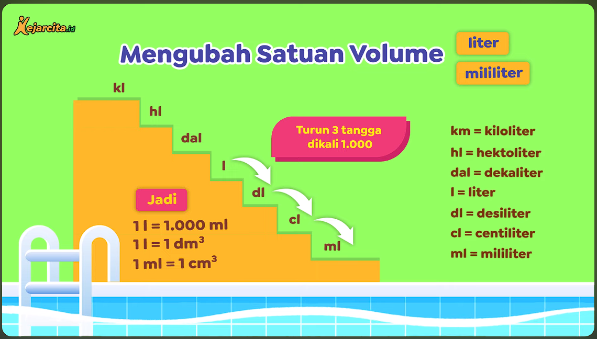

Kembali ke Halaman Sebelumnya
Debit adalah volume air yang mengalir dalam suatu periode waktu tertentu. Di sisi lain, debit mengacu pada banyaknya air yang mengalir dalam suatu sistem perairan dalam interval waktu tertentu. Satuan umum debit air melibatkan volume per satuan waktu, seperti meter kubik/detik atau liter/detik.
Volume disebut juga isi atau kapastitas. Satuan volume misalnya m3 , cm3 , liter, dan m. Perhatikan hubungan antar satuan volume berikut.

Dalam satuan volume, jika turun satu tangga di kali 1000 sedangkan jika naik satu tangga maka akan di bagi 1000.
Rumus Debit:

Segitiga di atas berguna untuk memudahkan mengingat rumus kecepatan, jarak, atau waktu. Letak posisi sejajar menunjukkan bahwa rumus dikali. Sedangkan letak posisi atas-bawah menunjukkan bahwa rumus di bagi.